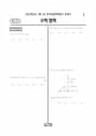

문제지

전국연합학력평가 · 시·도교육청 주관
2022년 7월 고3 학력평가 수학 미적분 1등급컷은 원점수 81점(추정), 표준점수 최고점은 152점입니다.
원점수 1등급컷은 공식 발표값이 아니라 EBSi·입시기관 값입니다. 등급별 값은 등급컷 표, 출처 구분은 데이터 원칙에 있습니다.

시험지를 먼저 풀어 보세요. 등급컷·표준점수·난이도는 흐리게 가려 뒀어요.
| 등급 | 원점수 | 표준점수 | 백분위 |
|---|---|---|---|
| 1 | 81 | 136 | 95 |
| 2 | 72 | 128 | 89 |
| 3 | 59 | 118 | 77 |
| 4 | 43 | 105 | 59 |
| 5 | 27 | 91 | 40 |
| 6 | 15 | 81 | 23 |
| 7 | 10 | 77 | 11 |
| 8 | 7 | 74 | 4 |
등급별 컷 · 입시기관 2곳 원점수 추정 종합(이투스·종로학원) · 공통+선택 점수 조합에 따라 다를 수 있음 · 만점 100점
| 등급 | 표준점수 이상 | 인원(명) | 비율 |
|---|---|---|---|
| 1 | 136 | 11,781 | 4.28% |
| 2 | 128 | 20,306 | 7.37% |
| 3 | 118 | 32,251 | 11.71% |
| 4 | 105 | 47,761 | 17.34% |
| 5 | 91 | 53,943 | 19.59% |
| 6 | 81 | 46,948 | 17.05% |
| 7 | 77 | 38,981 | 14.15% |
| 8 | 74 | 12,548 | 4.56% |
| 9 | 65 | 10,889 | 3.95% |
수학 영역 전체 응시자 기준이에요.
출처: 시·도교육청이 공개한 전국연합학력평가 성적 분석·통계자료(공개 자료 보기).
EBSi 응답자 기준으로 가장 많이 틀린 문항은 22번(4점, 주관식)이고, 오답률은 98.5%입니다. 상위 15문항 중 1문항은 정답보다 한 오답을 고른 사람이 더 많았습니다(28번: 정답 ① 28.7%, ⑤ 29.5%). 오답률 50%를 넘은 문항은 13개입니다.
| 순위 | 문항 | 배점 | 오답률 | 정답 | 많이 고른 오답 |
|---|---|---|---|---|---|
| 1 | 22번 | 4점 | 98.5% | 121 | 주관식 |
| 2 | 30번 | 4점 | 97.3% | 129 | 주관식 |
| 3 | 29번 | 4점 | 89.3% | 4 | 주관식 |
| 4 | 20번 | 4점 | 79.1% | 8 | 주관식 |
| 5 | 21번 | 4점 | 78.8% | 180 | 주관식 |
| 6 | 15번 | 4점 | 71.4% | ① | ⑤ 22.4% |
| 7 | 28번 | 4점 | 71.3% | ① | ⑤ 29.5% |
| 8 | 27번 | 3점 | 65% | ② | ⑤ 21.8% |
| 9 | 13번 | 4점 | 63.8% | ③ | ④ 28.2% |
| 10 | 14번 | 4점 | 62.9% | ⑤ | ③ 25.8% |
| 11 | 19번 | 3점 | 57.6% | 4 | 주관식 |
| 12 | 12번 | 4점 | 57.1% | ① | ④ 17.8% |
| 13 | 11번 | 4점 | 54.2% | ⑤ | ④ 18.3% |
| 14 | 18번 | 3점 | 38.9% | 16 | 주관식 |
| 15 | 9번 | 4점 | 34.5% | ④ | ⑤ 12.5% |
EBSi 가채점 응답자 기준 · 전 문항 중 오답률 상위 15문항
출처: EBSi 역대 등급컷·오답률 공개 화면. 가채점에 참여한 EBSi 이용자 응답이라 전체 응시자 정답률과는 다를 수 있습니다.
발행 기관: 시·도교육청(전국연합학력평가). 파일 위치: 이 사이트가 보관한 사본. 저작권은 발행 기관에 있습니다. 원본과 다르거나 게시 중단이 필요하면 연락처로 알려 주세요. 등급컷 출처 구분은 데이터 원칙에서 설명합니다.
막대 색은 역대 대비 난이도 · 진한 막대가 이 시험 · 막대를 누르면 그 회차로 이동
| 회차 | 1등급컷 | 표점 최고 | 1등급 표점 | 난이도 |
|---|---|---|---|---|
| 7월 학평2022년 고3이 시험 | 81 | 152 | 136 | 쉬움 |
| 4월 학평2022년 고3 | 75 | 160 | 138 | 매우 어려움 |
| 3월 학평2022년 고3 | 75 | 165 | 141 | 매우 어려움 |
| 10월 학평2021년 고3 | 75 | 163 | 140 | 매우 어려움 |
| 7월 학평2021년 고3 | 85 | 144 | 135 | 쉬움 |
| 4월 학평2021년 고3 | 82 | 147 | 133 | 매우 쉬움 |
| 3월 학평2021년 고3 | 88 | 157 | 139 | 매우 쉬움 |
공통과목 22번(4점, 98.5%)은 삼차함수의 접선으로 정의한 함수 문항, 20번(4점, 79.1%)은 이차함수로 정의한 함수의 조건 문항, 21번(4점, 78.8%)은 두 조건을 만족시키는 수열 문항이었습니다.
객관식 15번(71.4%)은 이차함수를 이용해 정의한 함수 문항이었습니다.
미적분 30번(4점, 97.3%)은 최솟값이 양수인 이차함수로 정의한 함수 문항, 29번(89.3%)은 반원의 호 위의 점들로 만든 도형 문항, 28번(71.3%)은 도함수가 연속인 함수의 조건 문항이었습니다.
공통 22번과 선택 30번이 모두 오답률 95%를 넘었습니다. 7월 시점에는 최고난도 두 문항보다 20·21번과 객관식 15번을 안정적으로 맞히는 것이 1등급 확보에 더 중요합니다. 시험 전체 흐름은 이 회차의 회차 해설에 정리했습니다.